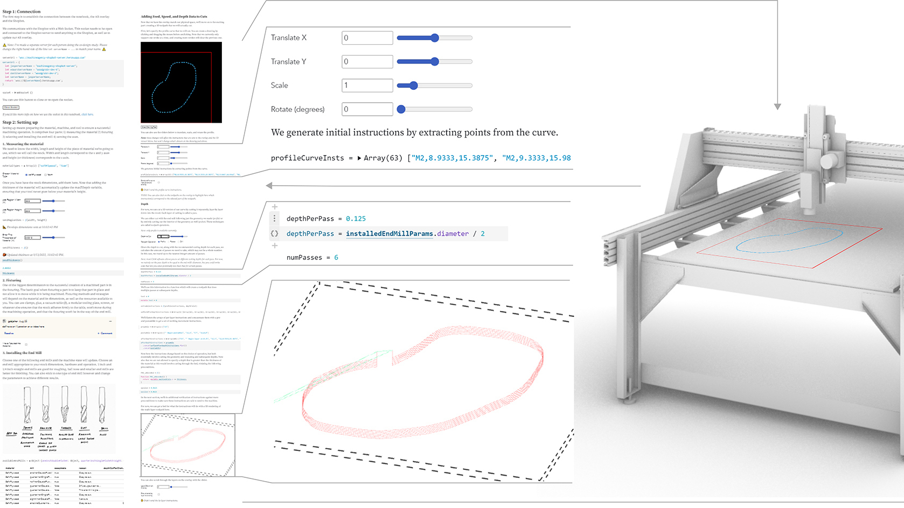

Imprimer is a machine infrastructure for a Shopbot CNC mill and an associated library for the Observable computational notebook. Imprimer lets makers learn experimentally, prototype new interactions for making, and understand physical processes by writing and debugging code. We demonstrate three experimental milling workflows as computational notebooks and conduct a user study with practitioners with a range of backgrounds.
Jasper Tran O'Leary
I am a PhD student building tools to help people incorporate digital fabrication into their craft.

- Imprimer: Computational Notebooks for CNC Milling
- Jasper Tran O'Leary, Gabrielle Benabdallah, Nadya Peek
- Paper, Code, Teaser, Presentation